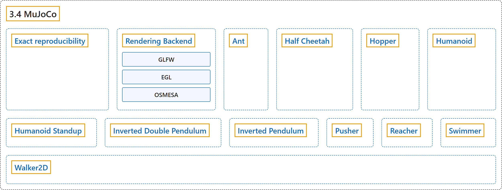

3.4 MuJoCo
Classification

Glossary
| Term | Definition | 中文翻译 | Source |
|---|---|---|---|
| 3.4 MuJoCo MuJoCo |
(context) "MuJoCo stands for Multi-Joint dynamics with Contact. It is a physics engine for facilitating research and development in robotics, biomechanics, graphics and animation, and other areas where fast and accurate simulation is needed." | （语境）MuJoCo 是 Multi-Joint dynamics with Contact 的缩写。它是一个物理引擎，用于推动机器人、生物力学、图形与动画以及其他需要快速准确仿真的领域的研究和开发。 | Farama Foundation, n.d.-h, "MuJoCo", para. 2 |
| Exact reproducibility 精确可复现性 |
(context) "Note: The exact behavior of the MuJoCo simulator changes slightly between mujoco versions due to floating point operation ordering (more information of their Documentation), if exact reproducibility is need besides using the seed for experiments the same simulator version should be used." | （语境）注意：由于浮点运算顺序不同，MuJoCo 模拟器的精确行为在不同 mujoco 版本之间会略有变化（详见其文档）；若需要精确可复现，除了为实验使用 seed 之外，还应使用相同的模拟器版本。 | Farama Foundation, n.d.-h, "Exact reproducibility", para. 1 |
| Rendering Backend 渲染后端 |
"The MuJoCo simulator renders images with OpenGL and can use 3 different back ends “glfw” (default), “egl”, “omesa”, which can be selected by setting an environment variable." | MuJoCo 模拟器用 OpenGL 渲染图像，可使用 3 种不同的后端：“glfw”（默认）、“egl”、“omesa”，可通过设置环境变量来选择。 | Farama Foundation, n.d.-h, "Rendering Backend", para. 1 |
| GLFW GLFW 后端 |
"Renders with Window System on GPU" | 在 GPU 上借助窗口系统渲染 | Farama Foundation, n.d.-h, "Rendering Backend", table, row 1 |
| EGL EGL 后端 |
"Renders headless on GPU" | 在 GPU 上无界面（headless）渲染 | Farama Foundation, n.d.-h, "Rendering Backend", table, row 2 |
| OSMESA OSMESA 后端 |
"Renders headless on CPU" | 在 CPU 上无界面（headless）渲染 | Farama Foundation, n.d.-h, "Rendering Backend", table, row 3 |
| Ant 蚂蚁 |
"The ant is a 3D quadruped robot consisting of a torso (free rotational body) with four legs attached to it, where each leg has two body parts." | 蚂蚁是一个三维四足机器人，由一个躯干（可自由转动的刚体）和连在上面的四条腿组成，每条腿有两节。 | Farama Foundation, n.d.-a, "Ant", para. 2 |
| Half Cheetah 半猎豹 |
"The HalfCheetah is a 2-dimensional robot consisting of 9 body parts and 8 joints connecting them (including two paws)." | 半猎豹是一个二维机器人，由 9 个身体部件和连接它们的 8 个关节组成（包括两只爪子）。 | Farama Foundation, n.d.-b, "Half Cheetah", para. 2 |
| Hopper 单腿跳跃者 |
"The hopper is a two-dimensional one-legged figure consisting of four main body parts - the torso at the top, the thigh in the middle, the leg at the bottom, and a single foot on which the entire body rests." | 单腿跳跃者是一个二维的单腿形体，由四个主要部件组成：顶部的躯干、中间的大腿、底部的小腿，以及支撑整个身体的一只脚。 | Farama Foundation, n.d.-c, "Hopper", para. 2 |
| Humanoid 人形 |
"The 3D bipedal robot is designed to simulate a human." | 这个三维双足机器人用来模拟人。 | Farama Foundation, n.d.-d, "Humanoid", para. 2 |
| Humanoid Standup 人形起立 |
"The 3D bipedal robot is designed to simulate a human." | 这个三维双足机器人用来模拟人。 | Farama Foundation, n.d.-e, "Humanoid Standup", para. 2 |
| Inverted Double Pendulum 二级倒立摆 |
"The cart can be pushed left or right, and the goal is to balance the second pole on top of the first pole, which is in turn on top of the cart, by applying continuous forces to the cart." | 小车可以向左或向右推，目标是通过对小车施加连续的力，让第二根杆平衡在第一根杆之上，而第一根杆又立在小车上。 | Farama Foundation, n.d.-f, "Inverted Double Pendulum", para. 2 |
| Inverted Pendulum 倒立摆 |
"The cart can be pushed left or right, and the goal is to balance the pole on top of the cart by applying forces to the cart." | 小车可以向左或向右推，目标是通过对小车施力，让杆在小车上保持平衡。 | Farama Foundation, n.d.-g, "Inverted Pendulum", para. 2 |
| Pusher 推动臂 |
"“Pusher” is a multi-jointed robot arm that is very similar to a human arm." | “Pusher”是一个与人类手臂非常相似的多关节机械臂。 | Farama Foundation, n.d.-i, "Pusher", para. 2 |
| Reacher 伸展臂 |
"“Reacher” is a two-jointed robot arm." | “Reacher”是一个两关节机械臂。 | Farama Foundation, n.d.-j, "Reacher", para. 2 |
| Swimmer 游泳者 |
"The swimmers consist of three or more segments (’links’) and one less articulation joints (’rotors’) - one rotor joint connects exactly two links to form a linear chain." | 游泳者由三个或更多的节段（“连杆”）和比节段少一个的关节（“转子”）组成：每个转子关节恰好连接两根连杆，形成一条线性链。 | Farama Foundation, n.d.-k, "Swimmer", para. 2 |
| Walker2D 二维行走者 |
"This environment builds on the hopper environment by adding another set of legs that allow the robot to walk forward instead of hop." | 这个环境在单腿跳跃者环境的基础上增加了一组腿，使机器人能向前行走，而不是跳跃。 | Farama Foundation, n.d.-l, "Walker2D", para. 2 |
References
Farama Foundation. (n.d.-a). Ant. Gymnasium Documentation (Version 1.4.0). Retrieved October 31, 2026, from https://gymnasium.farama.org/environments/mujoco/ant/
Farama Foundation. (n.d.-b). Half Cheetah. Gymnasium Documentation (Version 1.4.0). Retrieved October 31, 2026, from https://gymnasium.farama.org/environments/mujoco/half_cheetah/
Farama Foundation. (n.d.-c). Hopper. Gymnasium Documentation (Version 1.4.0). Retrieved October 31, 2026, from https://gymnasium.farama.org/environments/mujoco/hopper/
Farama Foundation. (n.d.-d). Humanoid. Gymnasium Documentation (Version 1.4.0). Retrieved October 31, 2026, from https://gymnasium.farama.org/environments/mujoco/humanoid/
Farama Foundation. (n.d.-e). Humanoid Standup. Gymnasium Documentation (Version 1.4.0). Retrieved October 31, 2026, from https://gymnasium.farama.org/environments/mujoco/humanoid_standup/
Farama Foundation. (n.d.-f). Inverted Double Pendulum. Gymnasium Documentation (Version 1.4.0). Retrieved October 31, 2026, from https://gymnasium.farama.org/environments/mujoco/inverted_double_pendulum/
Farama Foundation. (n.d.-g). Inverted Pendulum. Gymnasium Documentation (Version 1.4.0). Retrieved October 31, 2026, from https://gymnasium.farama.org/environments/mujoco/inverted_pendulum/
Farama Foundation. (n.d.-h). MuJoCo. Gymnasium Documentation (Version 1.4.0). Retrieved October 31, 2026, from https://gymnasium.farama.org/environments/mujoco/
Farama Foundation. (n.d.-i). Pusher. Gymnasium Documentation (Version 1.4.0). Retrieved October 31, 2026, from https://gymnasium.farama.org/environments/mujoco/pusher/
Farama Foundation. (n.d.-j). Reacher. Gymnasium Documentation (Version 1.4.0). Retrieved October 31, 2026, from https://gymnasium.farama.org/environments/mujoco/reacher/
Farama Foundation. (n.d.-k). Swimmer. Gymnasium Documentation (Version 1.4.0). Retrieved October 31, 2026, from https://gymnasium.farama.org/environments/mujoco/swimmer/
Farama Foundation. (n.d.-l). Walker2D. Gymnasium Documentation (Version 1.4.0). Retrieved October 31, 2026, from https://gymnasium.farama.org/environments/mujoco/walker2d/